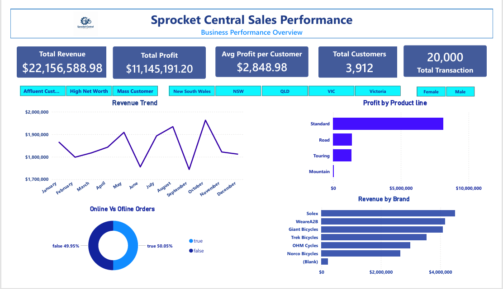
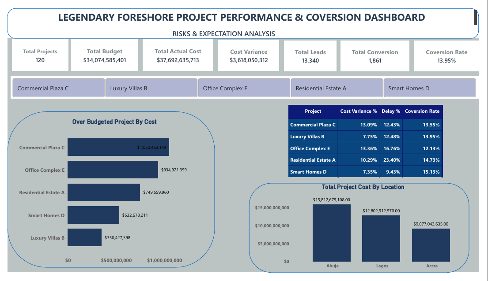
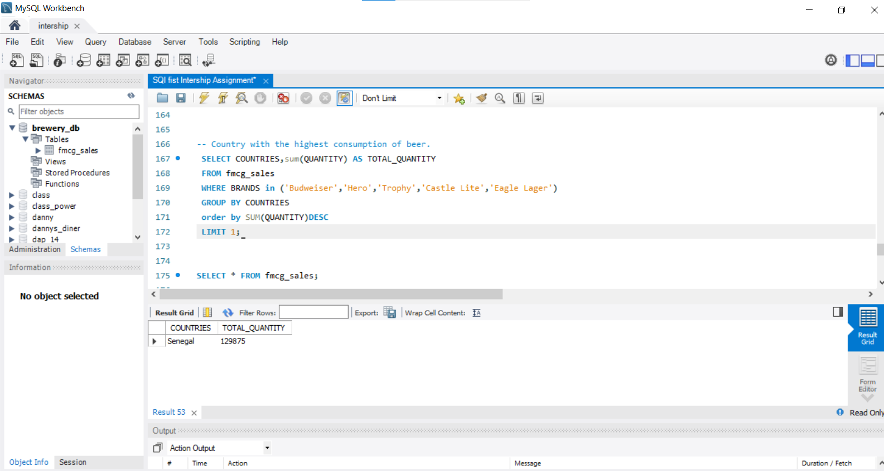
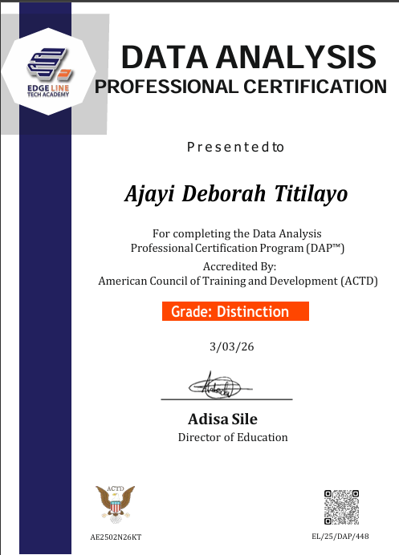

Founder of Debbylytics
Debbylytics is my data brand for analytics projects, tutorials, dashboard breakdowns, and practical learning resources for people growing into data careers.
I am Deborah Ajayi, a data analyst, educator, and community leader building Power BI dashboards, Excel reports, SQL analysis, and learning spaces that help people make better decisions with data.
I am Deborah Ajayi, the founder of Debbylytics. My work combines data analytics, business intelligence, and education: I clean messy data, design decision-ready dashboards, and explain insights in a way stakeholders can actually use.
My background in Mathematics and Integrated Science Education from Obafemi Awolowo University strengthened my quantitative reasoning, teaching ability, and structured problem-solving. Those skills now shape how I approach analytics: clear questions, careful cleaning, readable visuals, and practical recommendations.
I am actively building a public project portfolio across Power BI, Excel, SQL, business reporting, customer service analytics, sales performance, and project performance dashboards while growing a community for aspiring data analysts.
Debbylytics is my data brand for analytics projects, tutorials, dashboard breakdowns, and practical learning resources for people growing into data careers.
I support a growing community of aspiring analysts with learning direction, encouragement, practical data conversations, and project-building momentum.
A Debbylytics initiative designed for honest, practical conversations about analytics tools, portfolio building, beginner challenges, and data career growth.
A sample of my hands-on analytics work across Power BI, Excel, SQL, business intelligence, customer service, sales, and project performance reporting.

Tracks total sales, profit margin, category performance, monthly trends, and how discounting affects profit.

Analyzes call volume by topic, agent performance, answer rate, resolution rate, and customer satisfaction.

Shows content distribution, audience segmentation, rating patterns, top genres, and release-year trends.

Highlights revenue, profit, customer segments, product lines, order channels, and brand performance.

Compares budget, actual cost, cost variance, leads, conversions, and project risk signals.

Demonstrates filtering, grouping, ranking, and extracting business answers directly from database tables.
Interactive dashboard for monitoring revenue, product categories, regional performance, and monthly growth.
Profitability review showing loss-making categories, discount impact, and region-level performance gaps.
SQL queries for revenue, top products, customer behavior, monthly trends, and repeat purchase signals.
Service performance dashboard built to track call volume, resolution rate, answer rate, and agent satisfaction patterns.
Entertainment analytics dashboard showing content volume, audience categories, ratings, genres, and release trends.
Project performance and conversion dashboard covering budget variance, actual cost, leads, conversions, and delays.
My GitHub profile is linked throughout this portfolio so recruiters can review my data projects, SQL work, notebooks, dashboard documentation, and ongoing learning progress in one place.
Visit github.com/data-with-debbyFor each repository, include the business question, dataset source, cleaning steps, tools used, dashboard screenshot, insights, recommendations, and what you would improve next.
Review project structureDeborah is a phenomenal teacher. I love how she teaches and breaks every concept down little by little until I understand it.
Deborah has great leadership skills. She makes instructions and submissions easy for her followers, and she knows how to carry people along.

Completed a Data Analysis Professional Certification Program with distinction, strengthening my foundation in practical analytics, reporting, and business intelligence.
My data analyst CV is attached for recruiters, hiring managers, and collaborators who want a quick summary of my experience and skills.
I am available for data analyst opportunities, dashboard projects, data cleaning work, educational analytics, and collaborations connected to Debbylytics or Data Table Talks.
Phone
+234 810 318 3539